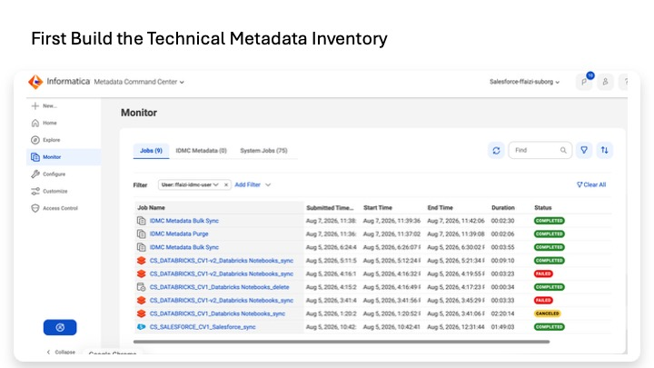
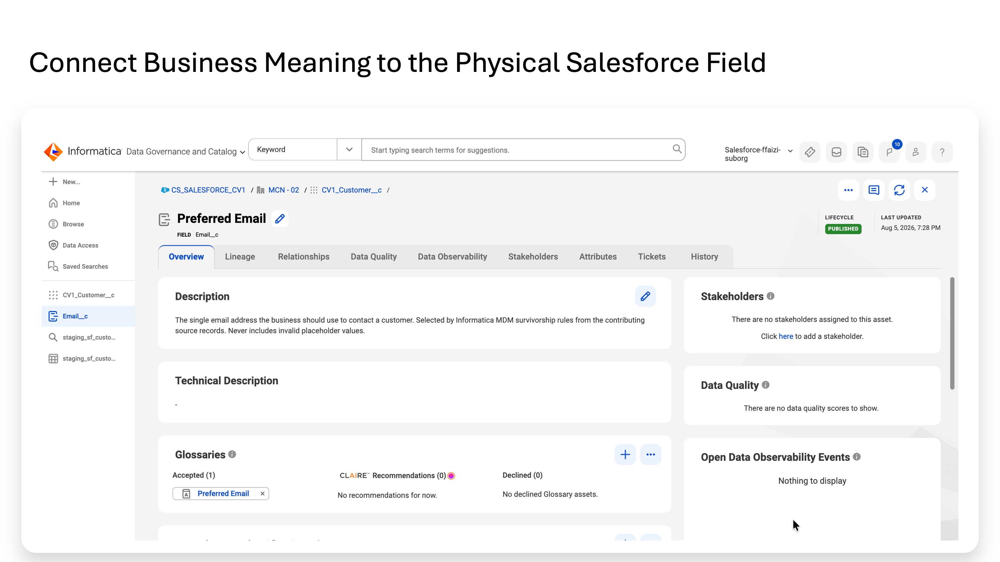
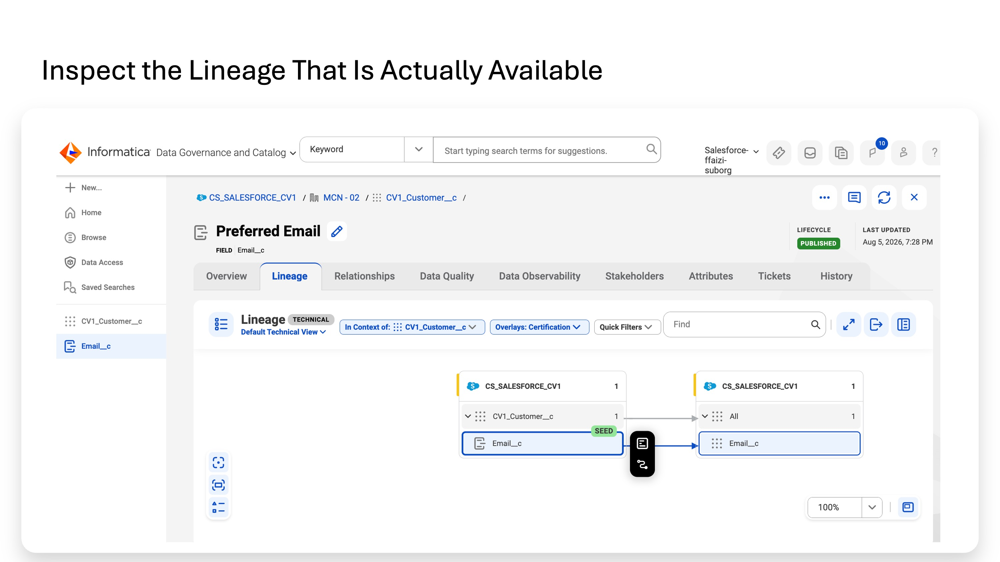

Lab 8
An organization can have customer data in Salesforce, analytical data in Databricks, and integration pipelines moving data between them — yet still lack one place to answer basic governance questions: What technical assets exist? What do the fields mean? Which integration created a target table? How much of the data flow can we trace?
Lab 8 focuses on those questions. It does not change the business data. It catalogs the technical landscape, adds business meaning to technical fields, and inspects the lineage that is available.
The Salesforce and Databricks scans can discover the two ends of this flow. To understand the middle, the catalog also needs information about the Cloud Data Integration (CDI) mapping and task that moved and transformed the data. Part D explains how that information enters the catalog and why it is required for lineage.
Create a governed catalog view of the workshop landscape. You will discover Salesforce and Databricks metadata, add CDI mapping/task metadata, associate a common business term with related fields, and inspect how much of the technical data flow Informatica can trace.
In short: identify what exists, define what it means, and trace how it moved.
| Capability | What it does in this lab |
|---|---|
| Metadata Command Center (MCC) | Configure, run, and monitor metadata discovery from systems such as Salesforce and Databricks. |
| Cloud Data Governance and Catalog (CDGC) | Search and govern the technical assets that were discovered; associate business terms; inspect lineage. |
| IDMC Metadata | Synchronize Informatica's own CDI mapping and task metadata into the catalog so the integration step can be cataloged and, when runtime metadata is connected, represented in lineage. |
Lab 8A is hands-on. You catalog Salesforce and Databricks, synchronize CDI metadata, associate the Preferred Email business term, and inspect lineage. Lab 8B is conceptual. It explains how data-quality evidence can also be surfaced in a governance context.
This lab does not configure Salesforce field-level security or Databricks Unity Catalog privileges; implement encryption, masking, or consent enforcement; prevent exfiltration; or replace security monitoring, audit, or threat detection. CDGC provides governance context and security visibility. Catalog access does not grant access to the underlying source data.
The catalog scans are deliberately metadata-only: they discover schema and technical definitions without profiling customer values. Scanner identities should use least privilege, catalog access itself should be governed, and a missing lineage segment should be treated as an unverified area rather than evidence that no data flow exists.
For this workshop environment: the Preferred Email business term already exists in CDGC; the CDI mapping CV1_M_01_STANDARDIZE_SF already exists; MCC and CDGC are entitled in the IDMC organization; Salesforce connection CN_SF_CV1 and Databricks connection CN_DBX_CV1 exist in Administrator; and runtime environment cv1secureruntime01 is available. Part C uses the validated scanner-specific Databricks connection CN_DBX_CV1_MCC.
If you are reading this lab independently, the important concept is simply that you need: (1) source systems to catalog, (2) a CDI integration whose metadata you want to trace, and (3) at least one business term to associate with a technical field.
The table separates participant activity from instructor pre-work. The long-running scans and the initial IDMC Metadata synchronization should be completed before a live workshop session.
| Part | Participant activity | Instructor prerequisite | Where |
|---|---|---|---|
| A | Confirm access, roles, and the connections the scanners reuse | — | MCC / Admin |
| B | Inspect or configure the Salesforce catalog source (metadata-only scan) | Pre-scan or validate a narrow filter | MCC |
| C | Inspect or configure the Databricks source using the validated scanner connection | Pre-scan on CN_DBX_CV1_MCC | MCC |
| D | Confirm the completed IDMC Metadata sync; locate one CDI Mapping asset in CDGC | Enable IDMC Metadata; let initial sync finish | MCC → CDGC |
| E | Bind one real business term (Preferred Email) to two technical fields | Ensure Lab 1 terms exist; both scans complete | CDGC |
| F | Inspect the lineage actually available; document full / partial / seed-only | Optionally pre-validate a persistent Mapping Task run | CDGC |
Participant hands-on time is ~45–60 min — only if the platform jobs are done first. The 45–60-minute estimate holds only when the instructor has already completed both catalog-source scans and the initial IDMC Metadata synchronization. Do not make participants wait for these platform jobs during a live session.
Observed durations in the live tenant:
| Observed activity | Observed duration / behavior | Workshop implication |
|---|---|---|
| Salesforce metadata extraction | ~1 hour 49 minutes for an unfiltered whole-org metadata scan | Pre-scan, or validate a narrow filter, before the workshop |
| Databricks metadata extraction | ~9 minutes 10 seconds after the scanner-specific connection fix | Live only if compute + Secure Agent are free; pre-scan is safer |
| IDMC Metadata initial enablement | ~3 hours end-to-end until synchronized assets were available (the Bulk Sync execution itself showed ~00:03:55) | Enable and validate well before the participant session |
Do not claim the Bulk Sync job itself ran for three hours. MCC recorded the final IDMC Metadata Bulk Sync execution as roughly 00:03:55. The three-hour figure is the observed end-to-end wait until setup completed and synchronized assets were actually available — not the job's runtime. Keep those two numbers distinct.
Run the two scans SEQUENTIALLY, not at once. Both catalog-source scans run through the same Secure Agent on cv1secureruntime01. Building and saving both sources in parallel is safe, but running both at once makes them compete for the one agent and each runs slower. Run the Salesforce scan to completion, then run the Databricks scan. Because the unfiltered Salesforce scan took ~1h49m, have at least one source pre-scanned before a live session so the later steps always have data to work with.
Before MCC can discover metadata, it needs access to the source systems. In this workshop, the catalog scanners reuse connections already defined in IDMC Administrator. You also need access to both MCC, where discovery is configured and run, and CDGC, where the discovered assets are later browsed and governed.
Before registering anything, settle three things: the service tiles exist, your role can create and run catalog sources, and the source connections the scanners will reuse are already in place.
1. Confirm the service tiles. In IDMC, open My Services (top-left service selector). You should see Metadata Command Center and Cloud Data Governance and Catalog.
These are two cooperating services and you will switch between them in this lab: MCC is where you register, run, and monitor catalog sources; CDGC is where you browse the resulting assets, bind terms, and view lineage. If either tile is missing it's an entitlement issue — ask your admin.
2. Confirm your role. For a workshop the simplest single role is Governance Administrator, which administers assets across both CDGC and MCC — it covers creating/running catalog sources and curating glossary associations. Check Administrator → Users that your user carries it.
3. Confirm the source connections exist in Administrator. The MCC scanners do not ask you to invent a second set of credentials — they reuse a connection already defined in Administrator → Connections. You need a Salesforce connection (CN_SF_CV1) and a Databricks connection (CN_DBX_CV1), both on runtime environment cv1secureruntime01. These are the same connections the earlier labs used.
You confirmed that the governance services, permissions, runtime, and source connections required by the rest of Lab 8 are available. No metadata has been scanned yet.
The catalog cannot govern a Salesforce object until it first knows that the object and its fields exist. The Salesforce catalog source reads structural metadata — for example object names, field names, types, triggers, and list views — and creates corresponding technical assets in the catalog.
This lab deliberately performs a metadata-only scan. It discovers the structure of Salesforce without profiling customer record values. That is why only Metadata Extraction is enabled.
The creation path is the same for every scanner-based source: New → Catalog Source → pick the type → Create, then a four-page wizard: Registration → Configuration → Associations → Schedule. The wizard buttons Back / Next / Save / Run and an X (close) sit top-right; Run stays greyed until you Save. Completed steps turn green with a check; the current step shows a blue number.
1. In MCC, click New in the left navigation, then Catalog Source. Select source type Salesforce, then Create.
2. Under General Information, enter a Name (e.g. CS_SALESFORCE_CV1) and an optional Description.
3. Under Connection Information: Catalog Source Type is Salesforce (read-only, fixed at creation). For Connection, select the existing CN_SF_CV1. Expand Connection Properties to confirm Runtime Environment cv1secureruntime01, Type Salesforce, and the Service URL. Click Test Connection, then Next.
The Configuration page has seven capability tabs:
| Capability tab | Lab setting | Why |
|---|---|---|
| Metadata Extraction | ON — locked | Required base capability. Creates Salesforce technical assets such as Org, Object, Field, Trigger, and List View. Reads schema, not customer values. |
| Lineage Discovery | OFF | Optional source-level lineage discovery. It is not how the CDI mapping enters the catalog in this lab; CDI mapping/task metadata comes through IDMC Metadata in Part D. |
| Data Profiling and Quality | OFF | Reads records and computes statistics / runs DQ rules — a value-level read. Lab 8B keeps the DQ governance overlay conceptual. |
| Data Observability | OFF | Needs repeated runs to detect deviations; not required for this one-time workshop scan. |
| Data Classification | OFF | Would introduce value/classification results that are outside the core exercise. Optional post-lab only. |
| Relationship Discovery | OFF | Not needed for this lab. |
| Glossary Association | OFF | Must remain off so participants can perform the manual Preferred Email association in Part E. |
Metadata Extraction is ON and LOCKED — do not try to "enable" it. The Enable Metadata Extraction toggle is locked on (clicking it shows a not-allowed cursor). It is the mandatory base capability every catalog source runs. A greyed appearance here is the locked-control styling, not an OFF state. Do NOT write or read this step as "turn Metadata Extraction on."
On the Metadata Extraction tab, leave the defaults: Runtime Environment = cv1secureruntime01; Metadata Change Option = Retain (the default — objects removed from the source stay in the catalog); Specify metadata filters = No for the first validated run. Ignore the Show Advanced → Expert Parameters area — leave it empty. Then open each of the other six tabs and confirm its Enable toggle is OFF.
Set the capabilities correctly before you save — this needs careful attention. Configure the capability toggles the way you want them before saving the source. In this environment, if Data Profiling was enabled during source creation, turning it back off within the same wizard session needed careful handling. The reliable approach is to get the capabilities right on the first pass; if you do enable one by mistake before saving, the clean path is to exit and discard the catalog-source changes (click the X top-right → Discard Changes) and recreate the source. (Behavior can vary by environment and release.)
A ✓ on a capability tab means that capability is ENABLED. In this tenant several capabilities came pre-enabled (Data Quality, Data Observability, Data Classification, Lineage Discovery, Glossary Association all showed a ✓). The security step in this lab is therefore active, not passive: you must open each tab and turn the value-reading capabilities OFF to get a true metadata-only scan. If Data Profiling is ever left on, its Modes of Run = "Keep Signatures Only" avoids storing actual values — that is the precise privacy knob.
4. Associations page has two tabs, Stakeholders and Asset Groups; both checkboxes (Assign Stakeholders, Assign Asset Groups) are unchecked by default. Leave both unchecked. They are optional and not needed to prove extraction, term binding, or lineage.
5. Schedule page has a single Run on schedule toggle. Leave it OFF (we run once, on demand).
6. Click Save, then Run.
Observe, don't configure, the governance operating model. Do not instruct participants to "assign the asset group / stakeholders." Instead, have them observe that MCC can assign stakeholders and place extracted assets into controlled asset groups, and that asset groups + access policies are the CDGC access-control mechanism — but this workshop does not configure that operating model.
7. In the Run Catalog Source Job dialog, the Scope of Run lists only Metadata Extraction (with Metadata Change Option = Retain). Because that is the sole enabled capability, the dialog visibly proves no value-reading capability will run. Click Run.
8. MCC opens the job monitoring page for the run (named CS_SALESFORCE_CV1_Salesforce_sync), with Overview and Logs tabs, a STATUS (STARTING → RUNNING → COMPLETED), Completed Tasks, and timing. Expand Job Details for extracted asset counts once done. (COMPLETED is the confirmed final-status label in this pod; label wording can vary by release.)
What the metadata-extraction task actually does (the security through-line). The Secure Agent on cv1secureruntime01 connects to the Salesforce org through CN_SF_CV1 and reads the org's structural definitions — not the row data. It calls Salesforce's metadata/describe APIs and harvests the Org, the objects (standard + custom, e.g. CV1_Customer__c), each object's fields (name, type, label), and related definitions like triggers and list views — each written to CDGC as a technical asset. It reads schema, not values: no customer records, just "this org has these objects with these fields of these types." That is exactly what the Scope-of-Run dialog confirmed. Contrast with Data Profiling / Data Classification, which would open records and sample actual values — which is why we left them off.
Note — you will see "lineage" in the logs even with Lineage Discovery OFF. The extractor does internal graph analysis as part of base Metadata Extraction (log lines like "Analysing lineage for Graph...", "Lineage analysis finished"). This is the scanner building its internal relationship graph (object→field containment, references) into the output model — a different mechanism from the optional Lineage Discovery capability you turned off. Same word, two meanings; this is expected and not a sign that Lineage Discovery is secretly on.
Why the unfiltered Salesforce scan was slow — metadata estate, not data rows. This first run used Specify metadata filters = No, which cataloged a large accessible metadata estate: standard and custom objects, managed-package objects, fields, list views, triggers, and related definitions. Data Profiling was off, so this was not a scan of millions of Salesforce data rows — it was breadth of schema, not depth of data. In the live tenant the unfiltered whole-org scan took ~1 hour 49 minutes.
Instructor pre-scan is the default; a narrow filter is desirable but its exact SF syntax is unverified. For live delivery, the recommended default is an instructor pre-scan so participants never wait ~1h49m. A narrow metadata filter scoped to the workshop object is desirable, but the exact Salesforce filter expression was not live-tested during this walkthrough. Do not present CV1_Customer__c* (or any specific expression) as confirmed working syntax unless it is separately validated in your pod.
End-state check: the SF job completes with STATUS = COMPLETED. You will browse the resulting assets in CDGC (Part E), not in MCC.
MCC has discovered the Salesforce technical structure and CDGC can now represent Salesforce objects and fields as catalog assets. The scan did not read customer record values.
The catalog also needs to know what exists on the Databricks side. In this workshop, that includes the Databricks objects that hold the customer-event data and the staging tables created by the CDI pipelines. Once these assets are cataloged, CDGC can search and govern them and can use them as endpoints when lineage is connected.
The Databricks scan is scoped to the workshop catalog so the exercise does not spend time discovering unrelated catalogs. In this tenant, the scanner also requires a scanner-specific clone of the working CDI connection. The detailed diagnosis is retained in Appendix A.
Same four-page wizard, applied to Databricks. Run this scan only after the Salesforce scan has finished (shared Secure Agent).
1. New → Catalog Source → Databricks → Create. Name it (e.g. CS_DATABRICKS_CV1). Under Connection Information, select the scanner-specific connection CN_DBX_CV1_MCC (not the CDI connection CN_DBX_CV1); Catalog Source Type = Databricks is read-only. Test Connection, then Next. Confirm Catalog Name = cv1_workshop_catalog — the Unity Catalog holding Lab 4B's staging tables.
Use the scanner-specific connection CN_DBX_CV1_MCC — this is the primary path in this tenant. In this workshop tenant the Databricks scanner runs on CN_DBX_CV1_MCC, a clone of CN_DBX_CV1 that retains the same runtime, PAT (Personal Access Token — the Databricks credential this connection uses), SQL warehouse, HTTP path, and Catalog Name. The only functional addition is one JDBC property, ConnCatalog=cv1_workshop_catalog;, which gives the scanner its catalog session context. Do not modify the working CDI connection CN_DBX_CV1. Full JDBC URL:
jdbc:databricks://dbc-c6cc5660-e25f.cloud.databricks.com:443/default;transportMode=http;ssl=1;AuthMech=3;httpPath=/sql/1.0/warehouses/8e487c7c5526e7cb;ConnCatalog=cv1_workshop_catalog;
2. Configuration has the same seven capability tabs as Salesforce. Apply the same policy: Metadata Extraction ON (locked); all six others OFF. Runtime Environment = cv1secureruntime01; Metadata Change Option = Retain.
3. Databricks adds an extra Configuration Parameters section (with a Show Advanced link). Leave all of these at their defaults and ignore Show Advanced. The defaults are: Lineage from Unity = Disabled (this is Unity-Catalog lineage, separate from the Lineage Discovery capability and from the CDI-mapping lineage that Part F actually uses); Notebooks Workspace Path = /Users; Extract Tags = No; and a set of Volumes / partition parameters that only matter for file-based Volumes.
The Databricks workspace contains many catalogs beyond the workshop one, so an unfiltered scan is slow and also tries to scan file Volumes you don't need. Filter the source down to just the workshop tables:
4. On the Metadata Extraction tab, set Specify metadata filters = Yes. A filter row appears: [Include/Exclude] → [Object type] → [Pattern] → [value] → Select, with + to add rows and a trash icon to remove them.
5. Set the row to Include Metadata → Object type = Table. Click into the value field (the Select values dialog) and enter the value below, then click OK:
cv1_workshop_catalog.*.*
6. Save, then Run, confirming in the Run Catalog Source Job dialog.
The greyed "Pattern" dropdown on the filter row does not need your attention here. On the filter row, the Pattern dropdown appears greyed for the Table object type; you do not set it in this workflow. The field that matters is the value field. A row of Include Metadata / Table / value is complete and valid without changing Pattern.
Filter value syntax — use the dotted path, not the bare catalog name. For the Table object type the value is a dotted three-part path catalog.schema.table (the wildcards panel's own example is catalog_dept.db_schema.customers). * matches multiple characters or empty; ? matches a single character. A bare cv1_workshop_catalog with no dots matches nothing — an empty scan. Use cv1_workshop_catalog.*.* to mean "any table in any schema of cv1_workshop_catalog." Because you include only Table* (not Volume), the Volumes/file-storage errors do not occur and the Volume parameters are irrelevant.
Known Databricks Unity Catalog issue in this tenant (short form — full diagnosis in the appendix). If the extraction fails with "Unable to detect [connection].[hive_metastore] catalog type", the cause is that the scanner did not establish cv1_workshop_catalog as its JDBC session context and fell back to the legacy hive_metastore, which does not exist in this Unity-Catalog-only workspace. The fix is exactly the scanner-specific cloned connection above, containing ConnCatalog=cv1_workshop_catalog;. Using CN_DBX_CV1_MCC from the start avoids the failure entirely; participants do not need to reproduce it. The complete diagnosis and ruled-out alternatives are in the appendix (Detailed analysis and resolution).
ConnCatalog property on the cloned connection.A Table filter does not yield table assets only. Although the include filter used Object Type = Table, the scanner also returned views and view columns (and other supporting or related assets) as part of the result. Do not tell participants the result will contain tables only.
The successful run (CS_DATABRICKS_CV1-v2, filtered to cv1_workshop_catalog.*.* on the CN_DBX_CV1_MCC connection) completed 4/4 tasks in 9 minutes 10 seconds, through the phases Test Connection → Catalog Source Extraction → Bulk Ingestion → Indexing. The Metadata Extraction Details → Results page reported:
| Asset type | Count | Asset type | Count |
|---|---|---|---|
| Database / catalog | 1 | View | 31 |
| Schema | 2 | View Column | 316 |
| Table | 6 | Nested Field | 4 |
| Column | 112 | Data Set | 21 |
| Data Element | 164 | Data Source | 1 |
| Reference Catalog Source | 1 |
The Results page also offers an XLSX export and a Debug Logs download. The run generated many INFORMATION/WARNING log entries; these were nonfatal because all four tasks and both Bulk Ingestion and Indexing completed.
End-state check: CDGC shows the cv1_workshop_catalog tables (Lab 4B staging tables) as table/column assets, with Unity Catalog structure preserved.
CDGC now has cataloged Databricks technical assets for the workshop catalog. Together, Parts B and C give the catalog the physical source and target assets that Part F will attempt to connect through CDI lineage.
Parts B and C answer a structural question: "What Salesforce and Databricks assets exist?" They do not answer the integration question: "What process read the Salesforce data, transformed it, and wrote the Databricks staging table?"
For the lineage exercise, that middle step is the CDI mapping CV1_M_01_STANDARDIZE_SF. It reads the Salesforce customer source, applies the standardization and validation pipeline, and writes the resulting records to Databricks staging and exception tables. The source and target scans alone cannot describe that CDI step.
CDGC therefore also needs metadata about CDI. The purpose is twofold: first, to make the CDI mapping itself visible as a governed technical asset; second, to provide the mapping/task information needed to represent the integration step in technical lineage. Without the CDI metadata, the catalog can know the Salesforce object and the Databricks table exist but cannot show the CDI process between them.
Because CDI and CDGC are already in the same Informatica Data Management Cloud (IDMC) organization, you do not register a third external scanner. The built-in IDMC Metadata feature synchronizes CDI information into the catalog.
| Information | What it answers | Why it matters here |
|---|---|---|
| Design-time Mapping metadata | What is this mapping configured to do? | Makes CV1_M_01_STANDARDIZE_SF searchable in CDGC and describes the authored integration definition. |
| Runtime Mapping Task metadata | What task actually executed? | Provides execution metadata used for runtime lineage. Part F uses a persistent Mapping Task for this reason. |
Confirmed path: Metadata Command Center → Configure → IDMC Metadata
1. Enable IDMC Metadata.
2. Select Runtime Environment: cv1secureruntime01.
3. Leave the other values at their defaults for this workshop.
4. Save.
Confirmed path: Metadata Command Center → Monitor → Jobs
The job appears in the main Jobs list as:
IDMC Metadata Bulk Sync
5. Refresh the Jobs list.
6. Wait until IDMC Metadata Bulk Sync shows COMPLETED.
Enable and validate well before the participant session. Initial end-to-end availability of synchronized CDI assets took ~3 hours in the live tenant, although MCC displayed the final Bulk Sync execution itself as ~00:03:55. The three hours is the end-to-end wait, not the job runtime. This is why IDMC Metadata enablement is instructor pre-work.
7. Switch to Data Governance and Catalog.
8. Search for CV1_M_01_STANDARDIZE_SF.
9. Open the result with Asset Type = Mapping.
10. Open Hierarchy. Confirmed hierarchy:
Informatica Data Management Cloud -> CV1_DATA_AI_WORKSHOP -> CV1_M_01_STANDARDIZE_SF
11. Open Relationships. Confirm the graph currently shows the Mapping related to its containing Project.
This is the core governance point of Part D. The completed synchronization confirms that the CDI mapping definition is now in the catalog. The Hierarchy view answers where the mapping sits (its organization). The Relationships view shows its Project membership. In this walkthrough the mapping asset did not yet expose a Lineage tab. This is expected: the initial synchronization brings the design-time definition, while runtime lineage is built from actual Mapping Task executions and is confirmed separately in Part F. Cataloging the mapping is not the same as tracing a run of it from source to target.
Lab 4B created and directly ran two mapping assets, CV1_M_01_STANDARDIZE_SF and CV1_M_02_STANDARDIZE_DBX. It did not create persistent Mapping Task assets. Running the mapping directly is enough to move and transform the data, but runtime lineage in the catalog is derived from the executions of a persistent Mapping Task. That is why Part F introduces one: the Mapping Task gives IDMC Metadata a task execution to capture and, in turn, the raw material for an end-to-end lineage graph.
• IDMC Metadata is enabled for cv1secureruntime01.
• IDMC Metadata Bulk Sync is COMPLETED.
• CV1_M_01_STANDARDIZE_SF is searchable as a Mapping asset in CDGC.
• The participant can explain the difference between design-time Mapping metadata and runtime lineage.
The catalog now contains the CDI mapping definition in addition to the Salesforce and Databricks endpoint assets. You have supplied the "middle" technical component required for a source → integration → target lineage view. Runtime lineage is inspected separately in Part F.
Salesforce Email__c --+
+--> Preferred Email
Databricks web_email --+
Cataloging technical fields tells us that they exist; it does not automatically tell a business user that two differently named fields represent the same business concept. Here, Salesforce uses Email__c and Databricks uses web_email. We associate both with the existing business term Preferred Email.
This adds governed meaning to the catalog. It does not rename the physical source fields, change their values, or change source-system security.
This happens in CDGC, not MCC. MCC is the command center where you configure, run, and monitor catalog sources. The extracted technical assets are browsed and curated in Cloud Data Governance and Catalog (CDGC) — a separate service. Switch to it via the service selector (top-left) or My Services.
The exercise scope is deliberately narrow: bind one real business term to two technically different source fields. The correct workshop email term from the final Lab 1 is Preferred Email — not 'Customer Email', 'Preferred Phone', or 'Customer Location'. The two fields you will bind it to are:
Salesforce: CV1_Customer__c.Email__c Databricks: customer_events.web_email Business term: Preferred Email
1. In CDGC, search for CV1_Customer__c.
2. Open the Salesforce Object result.
3. Open Contains.
4. Select Email__c.
5. On the field page, scroll to Glossaries.
6. Click the blue + or Click here to add Glossary assets.
7. The Add Glossary Assets dialog opens on Associate Glossary Assets.
8. Select Preferred Email.
9. Enable: Assign a business name and description from a Glossary asset to the technical asset.
10. Proceed to the Assign Business Name tab.
11. Confirm Preferred Email is selected.
12. Click Finish.
Confirmed result: the page heading becomes Preferred Email; the physical field name remains Email__c; the glossary definition is copied to the asset Description; Glossaries shows Accepted (1): Preferred Email.
13. Search for customer_events.
14. Open the table under CS_DATABRICKS_CV1-v2 → cv1_workshop_catalog → cv1_workshop.
15. Open Contains.
16. Select web_email.
17. Scroll to Glossaries and click the blue +.
18. Select Preferred Email.
19. Enable the same business-name-and-description switch.
20. Confirm Preferred Email on the Assign Business Name tab.
21. Click Finish.
Confirmed final relationship — one governed term now spans two systems:
CV1_Customer__c.Email__c ---+
+--> Preferred Email
customer_events.web_email ---+
Glossary association adds meaning; it does not enforce security. Glossary association adds governed business meaning to technical fields and makes cross-system discovery and impact analysis easier. It can complement classification and privacy processes, but it does not by itself enforce source security, masking, consent, or data access. Binding a field to a term is not a control — it is context that lets security and privacy teams answer 'which columns hold this kind of data?' across systems, from one place.
End-state check: Preferred Email shows Accepted on both CV1_Customer__c.Email__c and customer_events.web_email, and each field page shows the business term it now represents.
Two technical fields in two different systems now point to one governed business concept. A customer can search or browse from the business term Preferred Email without first knowing that Salesforce calls the field Email__c and Databricks calls it web_email.
Lineage is the catalog view of technical data movement: where data came from, what integration or transformation handled it, and where it landed. For this exercise, the ideal connected graph would show the Salesforce source object, the CDI mapping/task that standardized it, and the Databricks staging table.
Those three pieces entered the catalog by different routes: the Salesforce scan supplied the Salesforce asset; IDMC Metadata supplied the CDI mapping/task information; and the Databricks scan supplied the target table. Part F checks whether CDGC has connected those pieces into one lineage graph.
When you open Lineage from an asset, CDGC marks the asset you started from as the SEED. If the graph shows only staging_sf_customer with no arrows, that means the table is cataloged but its upstream lineage has not yet been connected in the catalog. It does not mean the data never moved.
1. Open CV1_M_01_STANDARDIZE_SF in CDGC.
2. Review the available tabs. Confirmed tabs: Overview, Hierarchy, Relationships, Stakeholders, Attributes, Tickets, History.
3. Note that the Mapping asset did not expose a Lineage tab during the walkthrough.
4. Open Relationships and observe the single Project relationship.
Interpretation. This confirms design-time cataloging and project membership. It is not runtime data lineage.
5. Search for staging_sf_customer.
6. Open the Databricks Table asset.
7. Open Lineage.
Observation: In our environment we have not completed the final few steps. As such, the Lineage tab exists; the graph shows only the seed — staging_sf_customer — with no arrows; no upstream Salesforce object and no CDI mapping is connected to it yet. In other words, the catalog knows the table but has not yet linked what produced it.
A missing graph segment is a visibility gap, not proof that no data flowed. The Salesforce and Databricks scanners cataloged the endpoint assets, and IDMC Metadata synchronized the CDI mapping definition. The runtime lineage — the drawn connections between them — was not yet visible. A seed-only graph does not mean no data moved: Lab 4B demonstrably moved the data; the catalog simply has not yet represented that movement as connected lines. Read it as a documented governance visibility gap to close, and compare it against the ideal result described at the start of Part F: Salesforce object → CDI mapping / Mapping Task → Databricks staging table, all connected.
The following section is not required to understand the core lineage concept. It documents the additional runtime steps used to give IDMC Metadata an actual Mapping Task execution to capture, and then to reconcile that execution with the physical Salesforce and Databricks assets.
Mapping Task execution is now confirmed; the remaining open item is whether the lineage nodes appear in CDGC. With Databricks compute restored, the persistent Mapping Task CV1_MT_01_STANDARDIZE_SF was built and run successfully and it recreated the Salesforce output tables (staging_sf_customer = 2 rows, dq_exception_sf = 2 rows). What has not yet been confirmed is whether the source → Mapping Task → target lineage nodes become visible in CDGC after IDMC Metadata synchronization. Present that final lineage-visibility step as pending validation, not the Mapping Task run itself.
8. Ensure Databricks compute is available.
9. Back up the Salesforce output tables before resetting them, so the exact rows that fed Lab 5 (MDM) can still be shown in a demo. CREATE TABLE AS SELECT makes an independent Delta copy that survives the drop:
CREATE TABLE cv1_workshop_catalog.cv1_workshop.staging_sf_customer_bkp_20260807 AS SELECT * FROM cv1_workshop_catalog.cv1_workshop.staging_sf_customer; CREATE TABLE cv1_workshop_catalog.cv1_workshop.dq_exception_sf_bkp_20260807 AS SELECT * FROM cv1_workshop_catalog.cv1_workshop.dq_exception_sf;
10. Verify the backups landed before dropping anything (expect 2 and 2):
SELECT 'staging_backup' AS tbl, COUNT(*) FROM cv1_workshop_catalog.cv1_workshop.staging_sf_customer_bkp_20260807 UNION ALL SELECT 'exception_backup' AS tbl, COUNT(*) FROM cv1_workshop_catalog.cv1_workshop.dq_exception_sf_bkp_20260807;
11. Only after the backup counts look right, reset the Salesforce output tables (the targets use Insert, so the originals must be dropped or the run appends duplicate rows):
DROP TABLE IF EXISTS cv1_workshop_catalog.cv1_workshop.staging_sf_customer; DROP TABLE IF EXISTS cv1_workshop_catalog.cv1_workshop.dq_exception_sf;
12. In Data Integration, choose New → Data Integration → Mapping Task → Create.
13. Configure the Mapping Task:
Name: CV1_MT_01_STANDARDIZE_SF Location: CV1_DATA_AI_WORKSHOP Mapping: CV1_M_01_STANDARDIZE_SF Runtime Environment: cv1secureruntime01
14. Save and run the Mapping Task. Both targets are Create New at Runtime, so the run recreates staging_sf_customer and dq_exception_sf fresh.
15. Confirm success in Data Integration → My Jobs, and confirm the recreated tables (expect staging = 2, exception = 2).
16. Allow IDMC Metadata to capture the execution. Confirm a runtime entry for the task under MCC → Monitor → IDMC Metadata before expecting any lineage change — this is the checkpoint that tells you the run was seen.
17. If the graph then stops at generic reference-connection nodes, apply Connection Assignment (Part F6) to reconcile them.
18. Recheck the Mapping Task / task-instance asset and staging_sf_customer → Lineage in CDGC to see whether the runtime lineage nodes now appear.
Databricks compute is available and the Mapping Task ran; only CDGC lineage visibility remains to confirm. An earlier environment constraint — a Databricks Free Edition compute limit that temporarily blocked even the DROP TABLE SQL — has been cleared. The persistent Mapping Task CV1_MT_01_STANDARDIZE_SF ran successfully and recreated the Salesforce tables (2 staging / 2 exception). The only item still to validate is whether the source → Mapping Task → target lineage graph becomes visible in CDGC after IDMC Metadata captures the execution and, if needed, Connection Assignment reconciles the reference connections. Until that is observed in your environment, do not describe full runtime lineage as confirmed.
It helps to know the sequence the catalog follows, so you can tell where a seed-only result is stuck:
• A Mapping Task executes in CDI (Part F4).
• IDMC Metadata captures that execution incrementally as runtime metadata. This is the first thing to check — until a runtime entry for the task appears under Monitor → IDMC Metadata in MCC, the lineage graph will stay seed-only no matter what else is configured.
• The endpoint scans (Parts B and C) must already contain the physical assets the task read from and wrote to.
• Connection Assignment reconciles the generic source/target reference connections the CDI task reports against the real Salesforce and Databricks catalog assets — this is the step that stitches the two ends together into one graph.
Confirmed minimum end state:
• Mapping definition visible in CDGC.
• Salesforce and Databricks technical assets visible.
• Target table exposes a Lineage tab.
• Actual graph state documented honestly as full, partial, or seed-only.
• Participant understands that an incomplete graph is a governance visibility gap, not proof of no data flow.
Extended instructor-prevalidated end state:
• Persistent Mapping Task executes after IDMC Metadata enablement.
• Runtime lineage synchronizes.
• Source, Mapping Task, and target nodes become visible.
• Reference connections are reconciled if required.
You inspected the lineage actually available instead of assuming the graph was complete. The governance result is useful in either case: a connected graph shows the technical path; a partial or seed-only graph identifies a catalog visibility gap that still needs to be resolved.
• MCC and CDGC are accessible; the Salesforce (CN_SF_CV1) and Databricks scanner (CN_DBX_CV1_MCC) connections are in place and tested.
• Both scans completed as metadata-only (only Metadata Extraction enabled): the Run dialog's Scope of Run listed just that one capability.
• Salesforce and Databricks catalog sources have completed extraction (status COMPLETED); IDMC Metadata Bulk Sync is COMPLETED and CV1_M_01_STANDARDIZE_SF is searchable as a Mapping asset.
• Technical assets are visible in CDGC: CV1_Customer__c + columns (Salesforce); cv1_workshop_catalog tables + columns (Databricks); the CDI Mapping definition.
• Preferred Email is accepted on CV1_Customer__c.Email__c.
• Preferred Email is accepted on customer_events.web_email.
• The lineage view for at least one staging table has been inspected and its actual state documented: full source → CDI → target lineage if prevalidated, or a partial/seed-only graph identified as an unresolved catalog visibility gap.
• The participant can explain business name versus accepted glossary association versus classification.
• The participant can explain Mapping design-time metadata versus Mapping Task runtime execution versus endpoint scanner assets versus Connection Assignment versus optional Lineage Discovery.
You cataloged Salesforce and Databricks without profiling customer values, added the CDI mapping definition to the same catalog, associated Preferred Email with fields in both systems, and inspected the lineage currently available. The result is a governance view that can answer three different questions: what technical assets exist, what selected fields mean to the business, and how much of the technical data flow can be traced.
Data quality and data governance look at related evidence from different perspectives. A data-quality engineer may want to know which rules or records failed. A governance user may want to open a cataloged asset or business term and understand whether the associated data is healthy. CDGC can surface data-quality evidence in that governance context, but the connection must be configured; the evidence does not appear merely because a quality rule and a catalog asset both exist.
This section stays conceptual because the exact setup depends on scanner and rule-template configuration. The architectural distinction is more important for this workshop than another long click-through.
Do not combine these into one automatic chain. The source lab records two distinct mechanisms, and the relevant integration or automation must be configured and validated before claiming that the same score automatically appears against a governed asset.
A rule occurrence is created from a Cloud Data Quality (CDQ) Rule Specification associated with a profile. The profile runs; a scorecard aggregates the rule-occurrence scores; the scorecards can be viewed in CDGC.
MCC's Data Quality capability can use Rule Automation to create or update rule occurrences for catalog data elements. This is a separate configuration path from the scorecard route.
| Lab 4A scorecard (CDP/CDQ) | Lab 8B rule occurrences (CDGC) | |
|---|---|---|
| Where it lives | Cloud Data Profiling — profile Results | CDGC — asset pages and term pages |
| Audience | DQ engineers building/tuning rules | Governance stakeholders, business owners, compliance |
| Emphasis | Which rows failed; which rules are noisy | Which terms/assets are healthy vs. risky, at a glance |
| Freshness | Per profile run | Aggregated snapshot from the last aggregation job |
| How evidence gets there | Rule outputs directly | Surfaced when a scorecard-integration or rule-automation route is configured and validated |
Quality evidence can be surfaced in CDGC when the relevant scorecard integration or rule-automation route is configured and validated. Lab 4A and Lab 8B address related quality evidence through different operational surfaces and audiences; do not describe the same numbers as automatically moving from one to the other.
Quality results provide evidence about data integrity. Invalid consent states, missing identifiers, impossible dates, or unexpected duplicates can signal data or integration problems. DQ evidence supports integrity analysis; it does not replace security monitoring.

Metadata Command Center records the jobs used to collect metadata from Salesforce, Databricks and IDMC. Successful extraction and bulk-sync runs provide the technical assets that CDGC can later search, govern and relate. The job history also preserves prior failed or cancelled attempts rather than hiding them.

The Salesforce field Email__c is cataloged with the governed business term Preferred Email, shown explicitly under Glossaries → Accepted. This is where the governance model stops being only a glossary: business meaning is now attached to a real technical asset.

CDGC shows an available technical lineage relationship for the Salesforce Email__c field associated with Preferred Email. This demonstrates field-level traceability in the catalog; it does not claim that the full Salesforce → CDI → Databricks runtime lineage was established, because that path was not completed in this environment.
Lab 8 did not change the source data. It made the technical landscape visible and governable: Salesforce and Databricks assets were cataloged, CDI integration metadata was added, Preferred Email was associated across systems, and lineage was inspected honestly based on what the environment currently exposes.
The only unfinished validation in this workshop environment is the final connected runtime-lineage graph. The persistent Mapping Task ran successfully; the remaining question is whether IDMC Metadata capture and, if needed, Connection Assignment produce the complete Salesforce → Mapping Task → Databricks graph in CDGC. Until that graph is observed, describe lineage as inspected rather than fully validated.
If this is the final workshop lab, the broader workshop end state is data that has been profiled, cleaned, mastered, published/activated, and then viewed through a governance layer that adds catalog, glossary, lineage, and security context.
This appendix is retained as technical reference from the live troubleshooting record. It is intentionally more detailed than the main customer flow.
This appendix records, in full, the diagnosis and resolution of the Databricks catalog-source failure encountered during live testing. It is included verbatim as reference material for anyone who hits the same "scanner framework failed exitCode 1" error against a Unity-Catalog Databricks workspace.
The catalog source was created in Metadata Command Center → New → Catalog Source → Databricks. The source used the existing Databricks connection CN_DBX_CV1. The target Unity Catalog catalog was cv1_workshop_catalog.
The metadata extraction was deliberately kept narrow: Metadata Extraction enabled; optional capabilities disabled (no profiling, no data quality automation, no observability, no classification, no glossary association); no scheduled run.
The metadata filter was: Include Metadata; Object Type: Table; Pattern (value): cv1_workshop_catalog.*.*. This pattern means catalog.schema.table — therefore cv1_workshop_catalog.*.* means all tables in all schemas under cv1_workshop_catalog. The Informatica connection name is not part of the Databricks object path and must not be added to this pattern.
The first Databricks catalog-source run failed after approximately three and a half minutes. The MCC job showed Status: FAILED; Completed Tasks: 1/3. The top-level error was generic:
scanner framework failed and returned with exitCode: 1
The more useful scanner error was:
Could not execute scanner task, error: java.lang.RuntimeException: com.compactsolutionsllc.dimc.repository.util.DatabaseFatalError: Unable to detect [CN_DBX_CV1].[hive_metastore] catalog type.
Related log messages included "Fatal exception occurred during metadata extraction: Unable to detect [CN_DBX_CV1].[hive_metastore] catalog type." and "Catalog Source Extraction Failed. Reason: ...Unable to detect [CN_DBX_CV1].[hive_metastore] catalog type." There was also a reports-directory warning, but that appeared as a secondary consequence of the scanner failure and was not the root cause.
The existing Administrator connection already had the correct catalog: Connection Name CN_DBX_CV1; Runtime Environment cv1secureruntime01; Authentication Type Personal Access Token; Catalog Name cv1_workshop_catalog. Its JDBC URL was:
jdbc:databricks://dbc-c6cc5660-e25f.cloud.databricks.com:443/default;transportMode=http;ssl=1;AuthMech=3;httpPath=/sql/1.0/warehouses/8e487c7c5526e7cb;
The Databricks warehouse supplied the same JDBC format. The authentication configuration was internally consistent (Authentication Type = Personal Access Token, AuthMech=3), so the failure was not addressed by switching to OAuth or changing AuthMech. The existing connection was already working for prior CDI workshop exercises, so it was important not to disrupt it merely to troubleshoot MCC.
The Databricks SQL Editor was used to validate the actual catalog environment.
SHOW CATALOGS;
The result included cv1_workshop_catalog, food_catalog, salesforce_pilot, samples, system, workspace, and others. It did not include hive_metastore.
SELECT current_catalog();
The result was workspace, reflecting the SQL editor session context (workspace.default). This did not invalidate the target catalog or indicate a problem with cv1_workshop_catalog.
DESCRIBE CATALOG EXTENDED cv1_workshop_catalog;
This succeeded and returned Catalog Name cv1_workshop_catalog; Owner ffaizi@salesforce.com; Catalog Type Regular. This proved the catalog existed, the user could see it, the user could describe it, and it was a valid Unity Catalog catalog.
DESCRIBE CATALOG EXTENDED hive_metastore;
This failed with [NO_SUCH_CATALOG_EXCEPTION] Catalog 'hive_metastore' was not found. SQLSTATE: 42704. This established that MCC was attempting to inspect a catalog that did not exist in this Databricks Free Edition workspace.
The most defensible assessment based on the observed evidence: the MCC Databricks scanner was not establishing cv1_workshop_catalog as its JDBC catalog context, despite the separate Informatica connection field containing that catalog name. The scanner fell back to — or attempted to inspect — hive_metastore. Because this Unity-Catalog-only workspace had no hive_metastore, catalog-type detection failed and the extraction stopped.
This conclusion is based on: the target catalog existed; the PAT identity could list and describe it; the connection already specified the correct Catalog Name; hive_metastore did not exist; the scanner explicitly failed while detecting hive_metastore; and adding ConnCatalog=cv1_workshop_catalog was the only material change before the successful run. This should be described as an observed environment-specific scanner behaviour, not necessarily a universal MCC requirement.
To protect the existing CDI connection, it was cloned. New scanner-specific connection: CN_DBX_CV1_MCC. All existing values were retained (Runtime Environment cv1secureruntime01; Authentication Type Personal Access Token; Catalog Name cv1_workshop_catalog; Databricks Token unchanged; SQL Warehouse unchanged; HTTP Path unchanged; AuthMech=3). The only functional change was appending ConnCatalog=cv1_workshop_catalog; to the JDBC URL. Final JDBC URL:
jdbc:databricks://dbc-c6cc5660-e25f.cloud.databricks.com:443/default;transportMode=http;ssl=1;AuthMech=3;httpPath=/sql/1.0/warehouses/8e487c7c5526e7cb;ConnCatalog=cv1_workshop_catalog;
The MCC catalog source was then updated to use CN_DBX_CV1_MCC. The metadata filter remained cv1_workshop_catalog.*.*.
After the cloned connection with ConnCatalog was used, the job passed the point where it had previously failed. Final result: Status COMPLETED; Completed Tasks 4/4; Run Duration 00:09:10. The completed phases included Test Connection, Catalog Source Extraction, Bulk Ingestion, and Indexing. The log showed successful messages such as "Processing succeeded for batch", "Processing completed for batch", "Indexing completed for batch", "Relationship Indexing complete", "Bulk Ingestion Job completed successfully", and "Metadata extracted". The MCC Results page reported:
| Asset type | Count |
|---|---|
| Database/catalog | 1 |
| Schema | 2 |
| Table | 6 |
| Column | 112 |
| View | 31 |
| View Column | 316 |
| Nested Field | 4 |
| Data Element | 164 |
| Data Set | 21 |
| Data Source | 1 |
| Reference Catalog Source | 1 |
The job generated a large number of informational and warning log entries, but these were nonfatal because all four tasks completed, bulk ingestion succeeded, indexing succeeded, and the final status was COMPLETED. The warnings did not justify changing the metadata filter or adding the Informatica connection name to the qualified table pattern.
The following changes were considered during troubleshooting but were not required and should not be included as workshop instructions.
Do not change PAT authentication to OAuth: the working configuration retained Authentication Type Personal Access Token and AuthMech=3. There was no need to change to AuthMech=11 / Auth_Flow=1, which would represent an OAuth machine-to-machine setup and would require a service principal, client ID and client secret.
Do not set the catalog to hive_metastore: the workspace proved hive_metastore did not exist. Changing the connection's catalog to that name would have pointed the connection at a nonexistent catalog.
Do not change the metadata filter: the correct filter remained cv1_workshop_catalog.*.*, representing catalog.schema.table. The Informatica connection name must not be added to it.
Do not change the SQL warehouse: the existing SQL warehouse and HTTP path worked after the catalog context was added.
Do not change the Secure Agent runtime: the existing runtime environment cv1secureruntime01 worked.
Create the Databricks catalog source using the existing Administrator connection. For the workshop: keep Metadata Extraction enabled; leave optional capabilities disabled; filter the scan to cv1_workshop_catalog.*.*; leave stakeholder assignment off; leave asset-group assignment off; leave scheduled execution off; save and run the source manually.
In this workshop environment, MCC initially failed with "Unable to detect [connection].[hive_metastore] catalog type." The Databricks workspace used Unity Catalog and did not contain the legacy hive_metastore. Although the Administrator connection already specified Catalog Name = cv1_workshop_catalog, MCC did not establish that catalog as its JDBC session context. A scanner-specific clone of the connection was created, and the property ConnCatalog=cv1_workshop_catalog; was appended to the JDBC URL. The metadata extraction then completed successfully. Do not switch authentication types or point the connection to hive_metastore. Treat the ConnCatalog addition as an environment-specific workaround unless it is validated as necessary in another tenant.
The scanner-specific clone was also the safer architectural choice. Instead of modifying the connection used by working CDI mappings (CN_DBX_CV1), a separate metadata-scanner connection was created (CN_DBX_CV1_MCC). This reduced the risk of breaking previous labs and reflects a useful production principle: integration-runtime connections and catalog-scanner connections may use the same platform identity and endpoint, but they can be managed independently when scanner-specific JDBC properties or privileges are required.
For a production implementation, the scanner identity should be limited to the metadata and catalogs it must discover. Profiling, classification and data-quality execution would require additional value-level access and should be granted separately from metadata-only extraction.
These are different mechanisms and should not be confused.
Lineage Discovery is an optional MCC capability run against a catalog source to discover lineage that the source itself can expose. It is not the mechanism used in this workshop to make the CDI mapping appear in CDGC.
The CDI mapping and task information enters the catalog through IDMC Metadata. For the specific Salesforce lineage exercise, IDMC Metadata can tell the catalog about the CDI mapping/task that read from Salesforce and wrote to Databricks. Connection Assignment, reached under MCC → Configure → Lineage in the tested environment, is then used when needed to link the source and target connection references reported by CDI to the actual Salesforce and Databricks assets already cataloged by MCC.
Until those pieces are connected, the Lineage view may show only the selected Databricks table marked SEED, with no upstream flow. That means the table is cataloged but the catalog has not yet linked the integration path to it.
Trusted Data Foundation Workshop